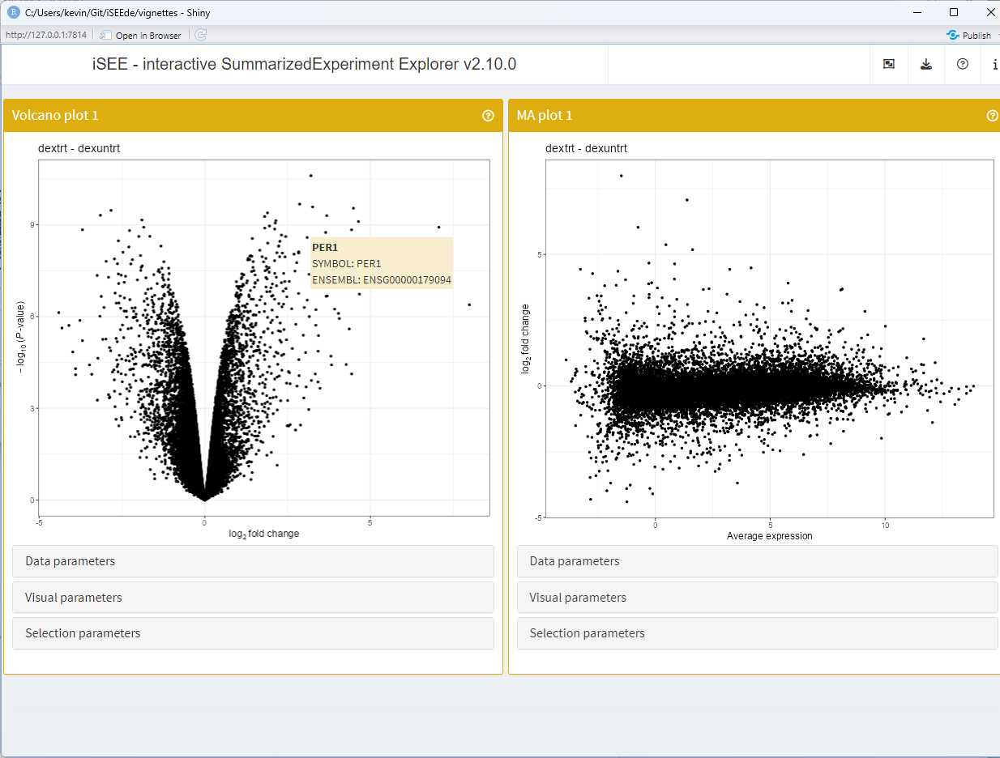

vignettes/annotations.Rmd
annotations.RmdWe use the ?airway data set.
We briefly adjust the reference level of the treatment factor to the untreated condition.
This section demonstrates one of many possible workflows for adding annotations to the data set. Those annotations are meant to make
First, we make a copy of the Ensembl identifiers – currently stored
in the rownames() – to a column in the
rowData() component.
Then, we use the org.Hs.eg.db
package to map the Ensembl identifiers to gene symbols. We store those
gene symbols as an additional column of the rowData()
component.
library("org.Hs.eg.db")
rowData(airway)[["SYMBOL"]] <- mapIds(org.Hs.eg.db, rownames(airway), "SYMBOL", "ENSEMBL")Next, we use the uniquifyFeatureNames() function of the
scater
package to replace the rownames() by a unique identifier
that is generated as follows:
library("scater")
rownames(airway) <- uniquifyFeatureNames(
ID = rowData(airway)[["ENSEMBL"]],
names = rowData(airway)[["SYMBOL"]]
)
airway
#> class: RangedSummarizedExperiment
#> dim: 64102 8
#> metadata(1): ''
#> assays(1): counts
#> rownames(64102): TSPAN6 TNMD ... LRG_98 LRG_99
#> rowData names(2): ENSEMBL SYMBOL
#> colnames(8): SRR1039508 SRR1039509 ... SRR1039520 SRR1039521
#> colData names(9): SampleName cell ... Sample BioSampleFor this example, we run a standard Limma-Voom analysis using
limma::voom(), limma::lmFit(),
limma::makeContrasts(), and
limma::eBayes().
Before that though, we use edgeR::filterByExpr() to
filter genes by expression level.
The differential expression results are fetched using
limma::topTable().
library("edgeR")
counts <- assay(airway, "counts")
design <- model.matrix(~ 0 + dex + cell, data = colData(airway))
keep <- filterByExpr(counts, design)
v <- voom(counts[keep,], design, plot=FALSE)
fit <- lmFit(v, design)
contr <- makeContrasts("dextrt - dexuntrt", levels = colnames(coef(fit)))
tmp <- contrasts.fit(fit, contr)
tmp <- eBayes(tmp)
res_limma <- topTable(tmp, sort.by = "P", n = Inf)
head(res_limma)
#> logFC AveExpr t P.Value adj.P.Val B
#> CACNB2 3.205598 3.682244 36.49009 2.370569e-11 3.996779e-07 16.03257
#> DUSP1 2.864775 6.644455 28.95296 2.000429e-10 9.657686e-07 14.66891
#> MAOA 3.256099 5.950559 28.29381 2.472372e-10 9.657686e-07 14.44796
#> SPARCL1 4.489075 4.166904 27.99497 2.725926e-10 9.657686e-07 14.01663
#> PRSS35 -2.828186 3.224885 -27.47899 3.234271e-10 9.657686e-07 13.80831
#> STEAP2 1.894563 6.790009 26.91396 3.914512e-10 9.657686e-07 14.03974Then, we embed this set of differential expression results in the
airway object using the embedResults()
method.
library(iSEEde)
airway <- embedResults(res_limma, airway, name = "dextrt - dexuntrt", class = "limma")
rowData(airway)
#> DataFrame with 64102 rows and 3 columns
#> ENSEMBL SYMBOL iSEEde
#> <character> <character> <DataFrame>
#> TSPAN6 ENSG00000000003 TSPAN6 <iSEELimmaResults>
#> TNMD ENSG00000000005 TNMD <iSEELimmaResults>
#> DPM1 ENSG00000000419 DPM1 <iSEELimmaResults>
#> SCYL3 ENSG00000000457 SCYL3 <iSEELimmaResults>
#> C1orf112 ENSG00000000460 C1orf112 <iSEELimmaResults>
#> ... ... ... ...
#> LRG_94 LRG_94 NA <iSEELimmaResults>
#> LRG_96 LRG_96 NA <iSEELimmaResults>
#> LRG_97 LRG_97 NA <iSEELimmaResults>
#> LRG_98 LRG_98 NA <iSEELimmaResults>
#> LRG_99 LRG_99 NA <iSEELimmaResults>In this example, we use iSEE::panelDefaults() to specify
rowData() fields to show in the tooltip that is displayed
when hovering a data point.
The application is then configured to display the volcano plot and MA plot for the same contrast.
Finally, the configured app is launched.
library(iSEE)
panelDefaults(
TooltipRowData = c("SYMBOL", "ENSEMBL")
)
app <- iSEE(airway, initial = list(
VolcanoPlot(ContrastName="dextrt - dexuntrt", PanelWidth = 6L),
MAPlot(ContrastName="dextrt - dexuntrt", PanelWidth = 6L)
))
#> The `name` provided ('') does not correspond to a known icon
#> The `name` provided ('') does not correspond to a known icon
#> The `name` provided ('') does not correspond to a known icon
#> The `name` provided ('') does not correspond to a known icon
#> The `name` provided ('') does not correspond to a known icon
#> The `name` provided ('') does not correspond to a known icon
#> The `name` provided ('') does not correspond to a known icon
#> The `name` provided ('') does not correspond to a known icon
#> The `name` provided ('') does not correspond to a known icon
if (interactive()) {
shiny::runApp(app)
}
The iSEEde package (Rue-Albrecht, 2022) was made possible thanks to:
This package was developed using biocthis.
Code for creating the vignette
## Create the vignette
library("rmarkdown")
system.time(render("methods.Rmd", "BiocStyle::html_document"))
## Extract the R code
library("knitr")
knit("methods.Rmd", tangle = TRUE)Date the vignette was generated.
#> [1] "2022-12-09 12:28:08 UTC"Wallclock time spent generating the vignette.
#> Time difference of 20.033 secsR session information.
#> ─ Session info ───────────────────────────────────────────────────────────────────────────────────────────────────────
#> setting value
#> version R Under development (unstable) (2022-11-30 r83393)
#> os Ubuntu 22.04.1 LTS
#> system x86_64, linux-gnu
#> ui X11
#> language en
#> collate en_US.UTF-8
#> ctype en_US.UTF-8
#> tz UTC
#> date 2022-12-09
#> pandoc 2.19.2 @ /usr/local/bin/ (via rmarkdown)
#>
#> ─ Packages ───────────────────────────────────────────────────────────────────────────────────────────────────────────
#> package * version date (UTC) lib source
#> airway * 1.19.0 2022-11-03 [1] Bioconductor
#> annotate 1.77.0 2022-11-01 [1] Bioconductor
#> AnnotationDbi * 1.61.0 2022-11-01 [1] Bioconductor
#> assertthat 0.2.1 2019-03-21 [1] CRAN (R 4.3.0)
#> backports 1.4.1 2021-12-13 [1] CRAN (R 4.3.0)
#> beachmat 2.15.0 2022-11-01 [1] Bioconductor
#> beeswarm 0.4.0 2021-06-01 [1] CRAN (R 4.3.0)
#> bibtex 0.5.0 2022-09-25 [1] CRAN (R 4.3.0)
#> Biobase * 2.59.0 2022-11-01 [1] Bioconductor
#> BiocGenerics * 0.45.0 2022-11-01 [1] Bioconductor
#> BiocManager 1.30.19 2022-10-25 [2] CRAN (R 4.3.0)
#> BiocNeighbors 1.17.1 2022-11-09 [1] Bioconductor
#> BiocParallel 1.33.6 2022-11-23 [1] Bioconductor
#> BiocSingular 1.15.0 2022-11-01 [1] Bioconductor
#> BiocStyle * 2.27.0 2022-11-01 [1] Bioconductor
#> Biostrings 2.67.0 2022-11-01 [1] Bioconductor
#> bit 4.0.5 2022-11-15 [1] CRAN (R 4.3.0)
#> bit64 4.0.5 2020-08-30 [1] CRAN (R 4.3.0)
#> bitops 1.0-7 2021-04-24 [1] CRAN (R 4.3.0)
#> blob 1.2.3 2022-04-10 [1] CRAN (R 4.3.0)
#> bookdown 0.30 2022-11-09 [1] CRAN (R 4.3.0)
#> bslib 0.4.1 2022-11-02 [2] CRAN (R 4.3.0)
#> cachem 1.0.6 2021-08-19 [2] CRAN (R 4.3.0)
#> circlize 0.4.15 2022-05-10 [1] CRAN (R 4.3.0)
#> cli 3.4.1 2022-09-23 [2] CRAN (R 4.3.0)
#> clue 0.3-63 2022-11-19 [1] CRAN (R 4.3.0)
#> cluster 2.1.4 2022-08-22 [3] CRAN (R 4.3.0)
#> codetools 0.2-18 2020-11-04 [3] CRAN (R 4.3.0)
#> colorspace 2.0-3 2022-02-21 [1] CRAN (R 4.3.0)
#> colourpicker 1.2.0 2022-10-28 [1] CRAN (R 4.3.0)
#> ComplexHeatmap 2.15.0 2022-11-01 [1] Bioconductor
#> crayon 1.5.2 2022-09-29 [2] CRAN (R 4.3.0)
#> DBI 1.1.3 2022-06-18 [1] CRAN (R 4.3.0)
#> DelayedArray 0.25.0 2022-11-01 [1] Bioconductor
#> DelayedMatrixStats 1.21.0 2022-11-01 [1] Bioconductor
#> desc 1.4.2 2022-09-08 [2] CRAN (R 4.3.0)
#> DESeq2 1.39.3 2022-11-23 [1] Bioconductor
#> digest 0.6.30 2022-10-18 [2] CRAN (R 4.3.0)
#> doParallel 1.0.17 2022-02-07 [1] CRAN (R 4.3.0)
#> dplyr 1.0.10 2022-09-01 [1] CRAN (R 4.3.0)
#> DT 0.26 2022-10-19 [1] CRAN (R 4.3.0)
#> edgeR * 3.41.2 2022-12-01 [1] Bioconductor
#> ellipsis 0.3.2 2021-04-29 [2] CRAN (R 4.3.0)
#> evaluate 0.18 2022-11-07 [2] CRAN (R 4.3.0)
#> fansi 1.0.3 2022-03-24 [2] CRAN (R 4.3.0)
#> fastmap 1.1.0 2021-01-25 [2] CRAN (R 4.3.0)
#> fontawesome 0.4.0 2022-10-25 [2] CRAN (R 4.3.0)
#> foreach 1.5.2 2022-02-02 [1] CRAN (R 4.3.0)
#> fs 1.5.2 2021-12-08 [2] CRAN (R 4.3.0)
#> geneplotter 1.77.0 2022-11-01 [1] Bioconductor
#> generics 0.1.3 2022-07-05 [1] CRAN (R 4.3.0)
#> GenomeInfoDb * 1.35.5 2022-11-20 [1] Bioconductor
#> GenomeInfoDbData 1.2.9 2022-11-29 [1] Bioconductor
#> GenomicRanges * 1.51.2 2022-12-07 [1] Bioconductor
#> GetoptLong 1.0.5 2020-12-15 [1] CRAN (R 4.3.0)
#> ggbeeswarm 0.6.0 2017-08-07 [1] CRAN (R 4.3.0)
#> ggplot2 * 3.4.0 2022-11-04 [1] CRAN (R 4.3.0)
#> ggrepel 0.9.2 2022-11-06 [1] CRAN (R 4.3.0)
#> GlobalOptions 0.1.2 2020-06-10 [1] CRAN (R 4.3.0)
#> glue 1.6.2 2022-02-24 [2] CRAN (R 4.3.0)
#> gridExtra 2.3 2017-09-09 [1] CRAN (R 4.3.0)
#> gtable 0.3.1 2022-09-01 [1] CRAN (R 4.3.0)
#> highr 0.9 2021-04-16 [2] CRAN (R 4.3.0)
#> htmltools 0.5.4 2022-12-07 [2] CRAN (R 4.3.0)
#> htmlwidgets 1.5.4 2021-09-08 [2] CRAN (R 4.3.0)
#> httpuv 1.6.6 2022-09-08 [2] CRAN (R 4.3.0)
#> httr 1.4.4 2022-08-17 [2] CRAN (R 4.3.0)
#> igraph 1.3.5 2022-09-22 [1] CRAN (R 4.3.0)
#> IRanges * 2.33.0 2022-11-01 [1] Bioconductor
#> irlba 2.3.5.1 2022-10-03 [1] CRAN (R 4.3.0)
#> iSEE * 2.11.0 2022-11-01 [1] Bioconductor
#> iSEEde * 0.99.0 2022-12-09 [1] Bioconductor
#> iterators 1.0.14 2022-02-05 [1] CRAN (R 4.3.0)
#> jquerylib 0.1.4 2021-04-26 [2] CRAN (R 4.3.0)
#> jsonlite 1.8.4 2022-12-06 [2] CRAN (R 4.3.0)
#> KEGGREST 1.39.0 2022-11-01 [1] Bioconductor
#> knitr 1.41 2022-11-18 [2] CRAN (R 4.3.0)
#> later 1.3.0 2021-08-18 [2] CRAN (R 4.3.0)
#> lattice 0.20-45 2021-09-22 [3] CRAN (R 4.3.0)
#> lifecycle 1.0.3 2022-10-07 [2] CRAN (R 4.3.0)
#> limma * 3.55.1 2022-11-29 [1] Bioconductor
#> locfit 1.5-9.6 2022-07-11 [1] CRAN (R 4.3.0)
#> lubridate 1.9.0 2022-11-06 [1] CRAN (R 4.3.0)
#> magrittr 2.0.3 2022-03-30 [2] CRAN (R 4.3.0)
#> Matrix 1.5-3 2022-11-11 [3] CRAN (R 4.3.0)
#> MatrixGenerics * 1.11.0 2022-11-01 [1] Bioconductor
#> matrixStats * 0.63.0 2022-11-18 [1] CRAN (R 4.3.0)
#> memoise 2.0.1 2021-11-26 [2] CRAN (R 4.3.0)
#> mgcv 1.8-41 2022-10-21 [3] CRAN (R 4.3.0)
#> mime 0.12 2021-09-28 [2] CRAN (R 4.3.0)
#> miniUI 0.1.1.1 2018-05-18 [2] CRAN (R 4.3.0)
#> munsell 0.5.0 2018-06-12 [1] CRAN (R 4.3.0)
#> nlme 3.1-160 2022-12-02 [3] local
#> org.Hs.eg.db * 3.16.0 2022-12-06 [1] Bioconductor
#> pillar 1.8.1 2022-08-19 [2] CRAN (R 4.3.0)
#> pkgconfig 2.0.3 2019-09-22 [2] CRAN (R 4.3.0)
#> pkgdown 2.0.6 2022-07-16 [2] CRAN (R 4.3.0)
#> plyr 1.8.8 2022-11-11 [1] CRAN (R 4.3.0)
#> png 0.1-8 2022-11-29 [1] CRAN (R 4.3.0)
#> promises 1.2.0.1 2021-02-11 [2] CRAN (R 4.3.0)
#> purrr 0.3.5 2022-10-06 [2] CRAN (R 4.3.0)
#> R6 2.5.1 2021-08-19 [2] CRAN (R 4.3.0)
#> ragg 1.2.4 2022-10-24 [2] CRAN (R 4.3.0)
#> RColorBrewer 1.1-3 2022-04-03 [1] CRAN (R 4.3.0)
#> Rcpp 1.0.9 2022-07-08 [2] CRAN (R 4.3.0)
#> RCurl 1.98-1.9 2022-10-03 [1] CRAN (R 4.3.0)
#> RefManageR * 1.4.0 2022-09-30 [1] CRAN (R 4.3.0)
#> rintrojs 0.3.2 2022-08-09 [1] CRAN (R 4.3.0)
#> rjson 0.2.21 2022-01-09 [1] CRAN (R 4.3.0)
#> rlang 1.0.6 2022-09-24 [2] CRAN (R 4.3.0)
#> rmarkdown 2.18 2022-11-09 [2] CRAN (R 4.3.0)
#> rprojroot 2.0.3 2022-04-02 [2] CRAN (R 4.3.0)
#> RSQLite 2.2.19 2022-11-24 [1] CRAN (R 4.3.0)
#> rsvd 1.0.5 2021-04-16 [1] CRAN (R 4.3.0)
#> S4Vectors * 0.37.3 2022-12-07 [1] Bioconductor
#> sass 0.4.4 2022-11-24 [2] CRAN (R 4.3.0)
#> ScaledMatrix 1.7.0 2022-11-01 [1] Bioconductor
#> scales 1.2.1 2022-08-20 [1] CRAN (R 4.3.0)
#> scater * 1.27.2 2022-11-17 [1] Bioconductor
#> scuttle * 1.9.3 2022-12-07 [1] Bioconductor
#> sessioninfo * 1.2.2 2021-12-06 [2] CRAN (R 4.3.0)
#> shape 1.4.6 2021-05-19 [1] CRAN (R 4.3.0)
#> shiny 1.7.3 2022-10-25 [2] CRAN (R 4.3.0)
#> shinyAce 0.4.2 2022-05-06 [1] CRAN (R 4.3.0)
#> shinydashboard 0.7.2 2021-09-30 [1] CRAN (R 4.3.0)
#> shinyjs 2.1.0 2021-12-23 [1] CRAN (R 4.3.0)
#> shinyWidgets 0.7.5 2022-11-17 [1] CRAN (R 4.3.0)
#> SingleCellExperiment * 1.21.0 2022-11-01 [1] Bioconductor
#> sparseMatrixStats 1.11.0 2022-11-01 [1] Bioconductor
#> stringi 1.7.8 2022-07-11 [2] CRAN (R 4.3.0)
#> stringr 1.5.0 2022-12-02 [2] CRAN (R 4.3.0)
#> SummarizedExperiment * 1.29.1 2022-11-04 [1] Bioconductor
#> systemfonts 1.0.4 2022-02-11 [2] CRAN (R 4.3.0)
#> textshaping 0.3.6 2021-10-13 [2] CRAN (R 4.3.0)
#> tibble 3.1.8 2022-07-22 [2] CRAN (R 4.3.0)
#> tidyselect 1.2.0 2022-10-10 [1] CRAN (R 4.3.0)
#> timechange 0.1.1 2022-11-04 [1] CRAN (R 4.3.0)
#> utf8 1.2.2 2021-07-24 [2] CRAN (R 4.3.0)
#> vctrs 0.5.1 2022-11-16 [2] CRAN (R 4.3.0)
#> vipor 0.4.5 2017-03-22 [1] CRAN (R 4.3.0)
#> viridis 0.6.2 2021-10-13 [1] CRAN (R 4.3.0)
#> viridisLite 0.4.1 2022-08-22 [1] CRAN (R 4.3.0)
#> withr 2.5.0 2022-03-03 [2] CRAN (R 4.3.0)
#> xfun 0.35 2022-11-16 [2] CRAN (R 4.3.0)
#> XML 3.99-0.13 2022-12-04 [1] CRAN (R 4.3.0)
#> xml2 1.3.3 2021-11-30 [2] CRAN (R 4.3.0)
#> xtable 1.8-4 2019-04-21 [2] CRAN (R 4.3.0)
#> XVector 0.39.0 2022-11-01 [1] Bioconductor
#> yaml 2.3.6 2022-10-18 [2] CRAN (R 4.3.0)
#> zlibbioc 1.45.0 2022-11-01 [1] Bioconductor
#>
#> [1] /__w/_temp/Library
#> [2] /usr/local/lib/R/site-library
#> [3] /usr/local/lib/R/library
#>
#> ──────────────────────────────────────────────────────────────────────────────────────────────────────────────────────This vignette was generated using BiocStyle (Oleś, 2022) with knitr (Xie, 2022) and rmarkdown (Allaire, Xie, McPherson et al., 2022) running behind the scenes.
Citations made with RefManageR (McLean, 2017).
[1] J. Allaire, Y. Xie, J. McPherson, et al. rmarkdown: Dynamic Documents for R. R package version 2.18. 2022. URL: https://github.com/rstudio/rmarkdown.
[2] M. W. McLean. “RefManageR: Import and Manage BibTeX and BibLaTeX References in R”. In: The Journal of Open Source Software (2017). DOI: 10.21105/joss.00338.
[3] A. Oleś. BiocStyle: Standard styles for vignettes and other Bioconductor documents. R package version 2.27.0. 2022. URL: https://github.com/Bioconductor/BiocStyle.
[4] R Core Team. R: A Language and Environment for Statistical Computing. R Foundation for Statistical Computing. Vienna, Austria, 2022. URL: https://www.R-project.org/.
[5] K. Rue-Albrecht. iSEEde: iSEE extension for panels related to differential expression analysis. R package version 0.99.0. 2022. URL: https://github.com/iSEE/iSEEde.
[6] H. Wickham. “testthat: Get Started with Testing”. In: The R Journal 3 (2011), pp. 5–10. URL: https://journal.r-project.org/archive/2011-1/RJournal_2011-1_Wickham.pdf.
[7] H. Wickham, W. Chang, R. Flight, et al. sessioninfo: R Session Information. R package version 1.2.2. 2021. URL: https://CRAN.R-project.org/package=sessioninfo.
[8] Y. Xie. knitr: A General-Purpose Package for Dynamic Report Generation in R. R package version 1.41. 2022. URL: https://yihui.org/knitr/.